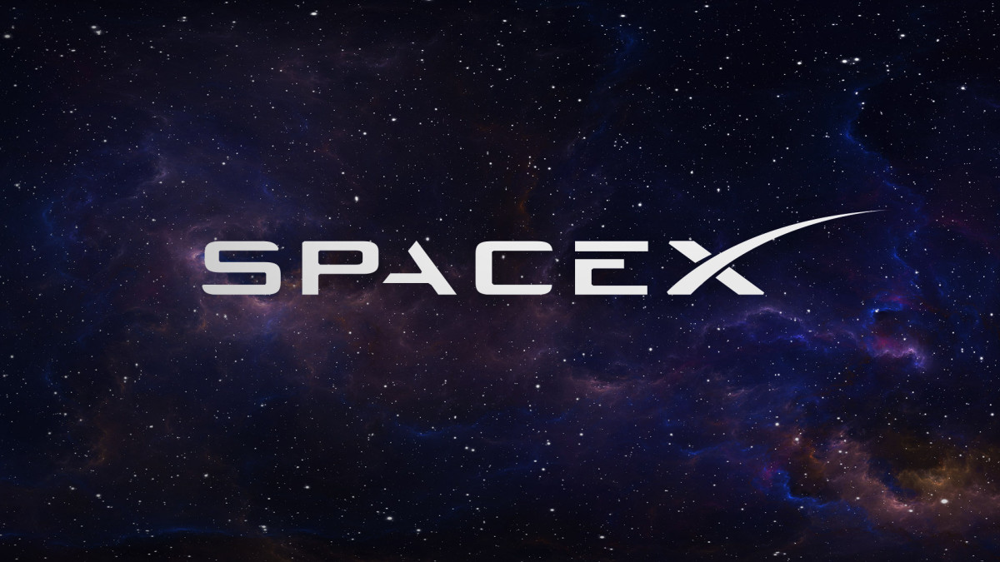

About Me
Elon Reeve Musk (born June 28, 1971) is a businessman and investor. He is the founder, chairman, CEO, and CTO of SpaceX; angel investor, CEO, product architect, and former chairman of Tesla, Inc.; owner, executive chairman, and CTO of X Corp.; founder of the Boring Company and xAI; co-founder of Neuralink and OpenAI; and president of the Musk Foundation. He is one of the wealthiest people in the world, with an estimated net worth of US$190 billion as of March 2024, according to the Bloomberg Billionaires Index, and $195 billion according to Forbes, primarily from his ownership stakes in Tesla and SpaceX.

Projects
Space X
In early 2001, Musk became involved with the nonprofit Mars Society and discussed funding plans to place a growth-chamber for plants on Mars. In October of the same year, he traveled to Moscow with Jim Cantrell and Adeo Ressi to buy refurbished intercontinental ballistic missiles (ICBMs) that could send the greenhouse payloads into space.
Learn MoreTesla

Tesla, Inc., originally Tesla Motors, was incorporated in July 2003 by Martin Eberhard and Marc Tarpenning, who financed the company until the Series A round of funding. Both men played active roles in the company's early development prior to Musk's involvement.
Learn MoreContact
Feel free to contact me through: